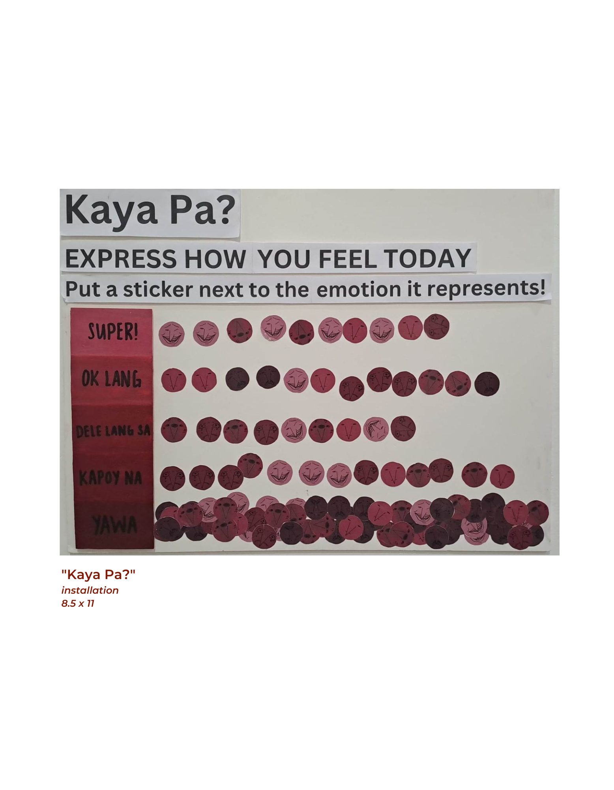
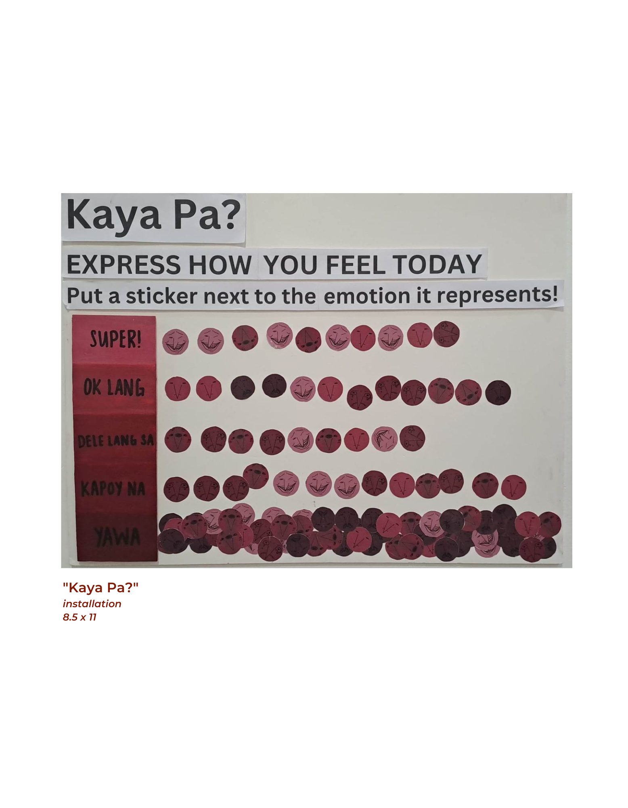

WHO ARE WE?
| John Michael C. Revagorda is a computer programmer hailing from Dumaguete City, Negros Oriental. Studying BS IT with Rianne Garcia, he enjoys toying with codes found on systems and learning how each line of code work. At his free time, he draws several artworks that span on digital artworks and traditional. As a self-taught artist who attended past art webinars, he utilizes his drawing tablet, his pencil and pen, and his keen art skills to draw different characters from different games. As of now, he is dealing with the balancing of his school life and his personal time. |

|

|
Rianne Gracielle M. Garcia is a multimedia artist whose mediums include traditional and digital artworks. Despite her love for digital art, she is always interested in exploring different media and materials. She is now a first year taking Bachelor of Information Technology, studying at Silliman University. Originally from Cebu City and currently residing in Dumaguete City, Negros Oriental. Involved in animation and manga at a young age, Rianne became interested in art. Having transferred from Cebu to Bacolod six times in grade school to high school, she has been able to advance and grow by participating in theater workshops and orgs. A dreamer who never gives up |


 
